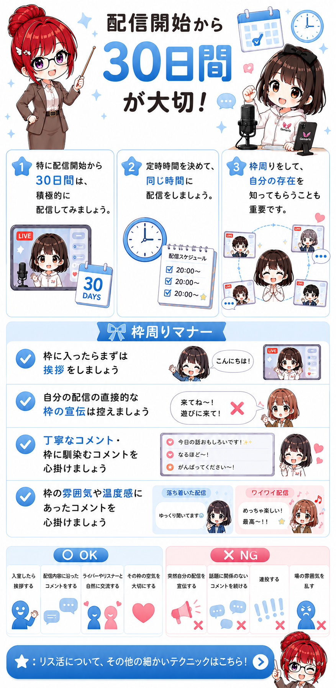
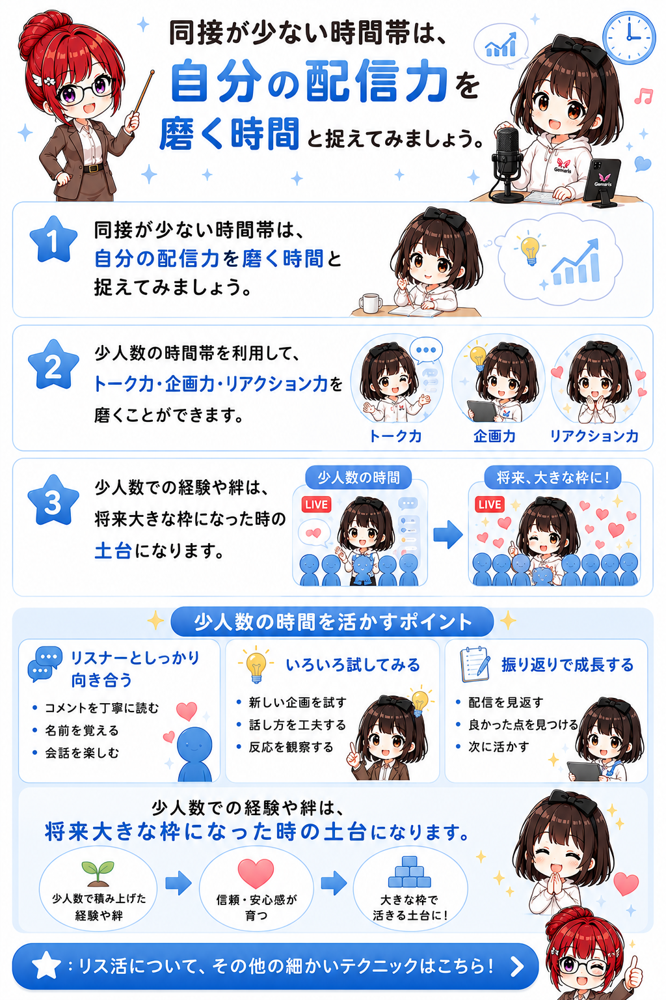
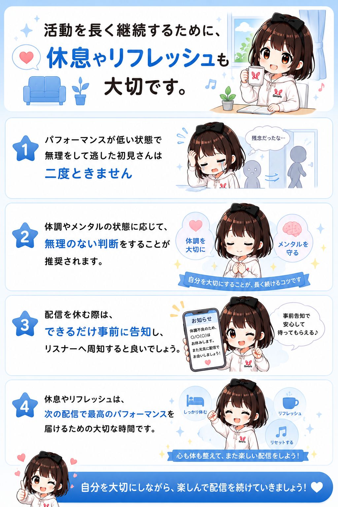

✦
Gemaris
LIVER HANDBOOK
ホーム
初配信前の準備
リスナー体験
Q&A
枠回り・リス活
CHAPTER 03
よくある質問
配信中の疑問や悩みを、気になる項目から確認できます。
Q01
ギフトはどうやったら増えますか？
＋
画像を追加するとここに表示されます
images/qa01.png
Q02
フォロワー・リスナーはどうやったら増えますか？
＋

画像を追加するとここに表示されます
images/qa02.png
Q03
同接が少ないときはどうすればいいですか？
＋

画像を追加するとここに表示されます
images/qa03.png
Q04
配信で何を話せばいいかわかりません
＋
画像を追加するとここに表示されます
images/qa04.png
Q05
配信を休みたくなったらどうすればいいですか？
＋

画像を追加するとここに表示されます
images/qa05.png
← 前の章
特別編へ →
×
タップまたはEscキーで閉じる